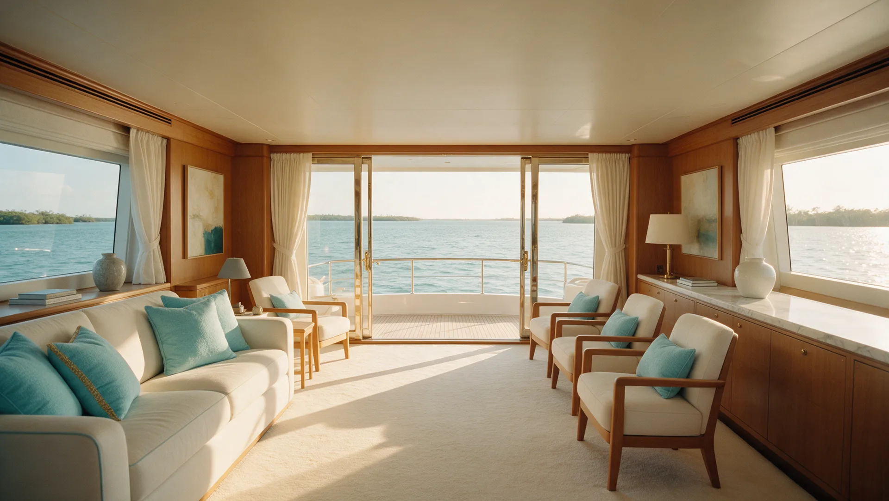
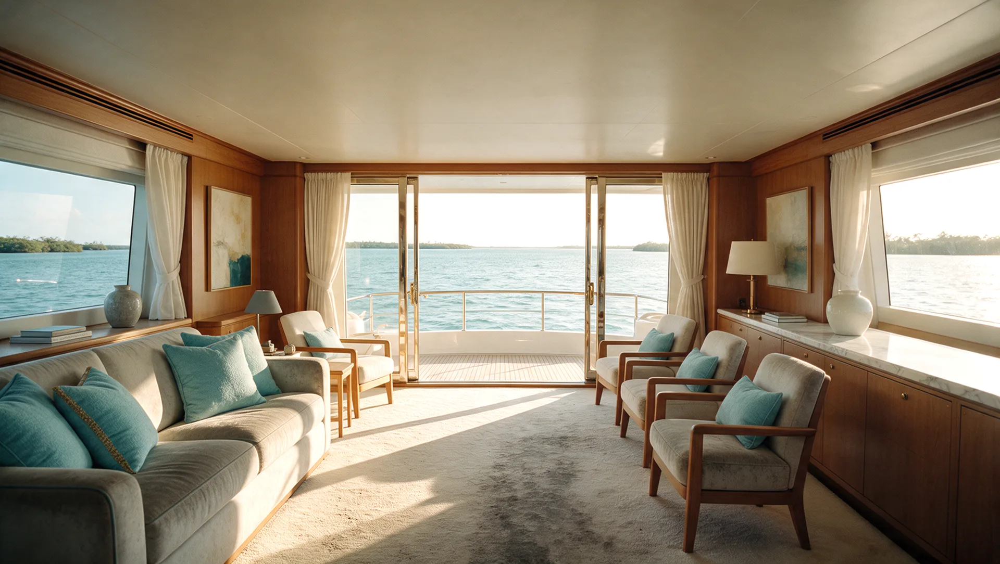
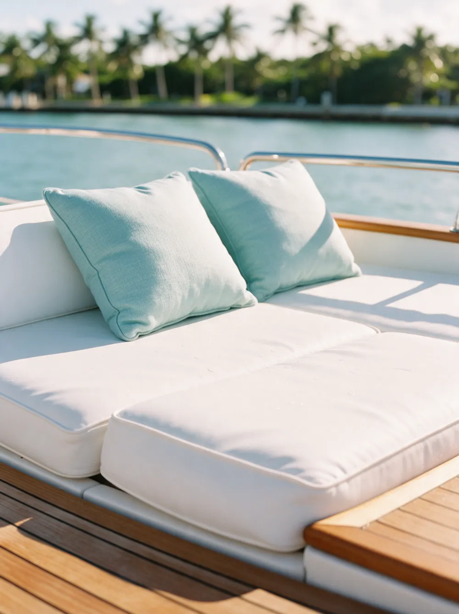
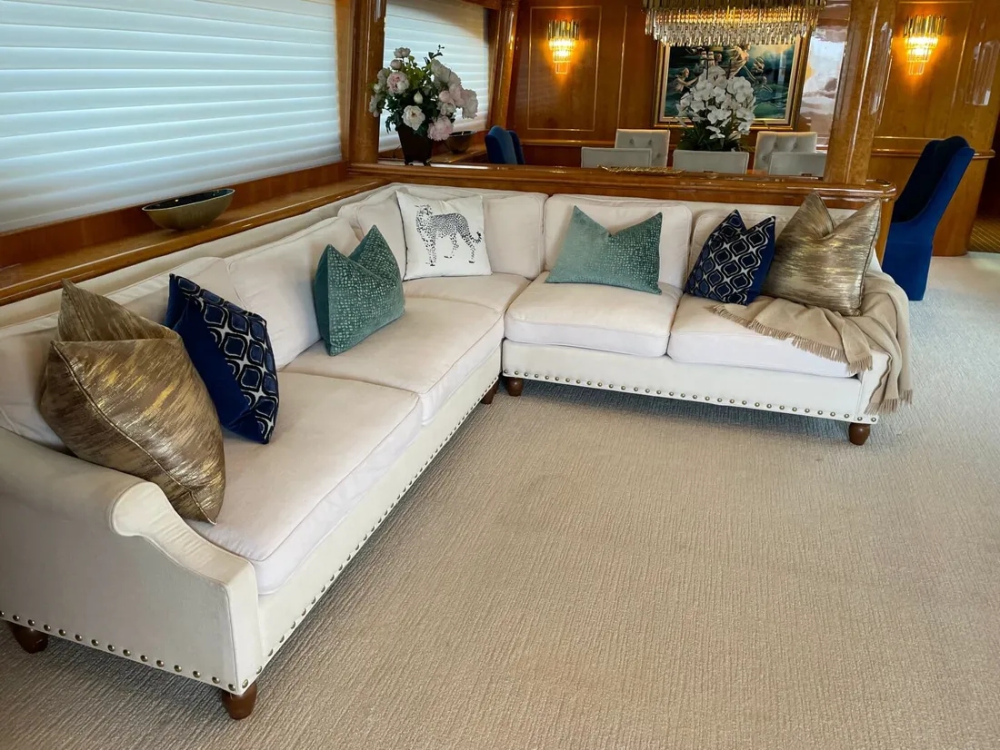

Yacht interior cleaning in Palm Beach County
Discreet, careful cleaning for salons, staterooms, carpet, upholstery and mattresses aboard, finished with Harbor Shield protection.
- 240five-star Google reviews
- 15+years in Palm Beach County
- $1M+liability insurance
What does yacht interior cleaning include?
Harbor's yacht interior cleaning covers the salon and staterooms: removable rugs and snap-in carpet, built-in seating, upholstered walls and soft furnishings, stain and odor treatment, and mattresses.
Rugs, snap-in carpet and mattresses can be cleaned off-site to keep disruption aboard to a minimum, and Harbor Shield, an EPA-registered, non-toxic biostatic treatment, protects against mold, mildew and odor-causing bacteria.

Drag to compare. An illustration of a yacht salon before and after an interior clean.
What we clean aboard
Every soft surface on the vessel, handled with the care a yacht interior needs.
Rugs & carpet
Removable rugs and snap-in carpet pieces, cleaned off-site, including delicate fibers like viscose.
Upholstery
Built-in seating, upholstered walls and soft furnishings throughout the salon and staterooms.
Stain & odor treatment
A fast response to spills and odors, before they set into fine fabrics.
Mattresses
Cleaned off-site at Harbor's facility, so there is minimal disruption aboard.

Harbor Shield protection
An EPA-registered, non-toxic biostatic treatment that protects against mold, mildew, algae, fungus and odor-causing bacteria.
- Mattresses
- Outdoor furniture and cushions
- Life vests
- Wetsuits
- Water toys
How we work on board
Owners, captains and crew expect discretion and care. So do we.
- Fine-finish safe
- High-end, low-toxicity products that will not damage fine finishes and fabrics.
- Hours, not days
- Equipment that dries carpet and upholstery in hours, so the vessel is back in use quickly.
- Sanitized tools
- Every tool is sanitized after each use, so nothing travels from one vessel to the next.
- Minimal disruption
- Rugs, snap-in carpet and mattresses can be cleaned off-site, with a fast, discreet response.
Real yacht interiors
Photographs taken by the Harbor crew on yacht jobs.



Yacht interior questions, answered
Do you clean aboard, or take items off the boat?
Both. Upholstery, built-in seating and upholstered walls are cleaned aboard, while removable rugs, snap-in carpet and mattresses can be cleaned off-site at Harbor's facility to minimize disruption on the vessel.
What is Harbor Shield?
Harbor Shield is an EPA-registered, non-toxic biostatic treatment that protects against mold, mildew, algae, fungus and odor-causing bacteria. It can be applied to mattresses, outdoor furniture, life vests, wetsuits and water toys.
Can you clean viscose and delicate rugs aboard a yacht?
Yes. Delicate fibers such as viscose are cleaned off-site with methods suited to the fiber.
How quickly does everything dry?
Harbor's equipment dries carpet and upholstery in hours rather than days, so the vessel is back in use quickly.
What products do you use on board?
High-end, low-toxicity products that will not damage fine finishes and fabrics, and all tools are sanitized after each use.
Can you respond quickly to a spill or odor aboard?
Yes. Stain and odor treatment is offered with a fast response, with discretion for owners, captains and crew.
Where do you clean yachts?
Throughout Palm Beach County and the surrounding coastal communities, including West Palm Beach, Palm Beach, Jupiter, Palm Beach Gardens, Boynton Beach, Delray Beach and Boca Raton.
Yacht interior cleaning near you
- Jupiter
- Palm Beach Gardens
- Palm Beach Island
- West Palm Beach
- Wellington
- Boynton Beach
- Delray Beach
- Boca Raton
- Deerfield Beach
Get a Personalized Quote for yacht interior cleaning
Tell us about the vessel and what needs cleaning, and we will get back to you with a personalized estimate. Prefer to talk? Call or text (561) 301-1977.
Your request is ready.
Send it to Harbor by text or email. Nothing is sent until you choose.
Text it to Harbor Email it instead